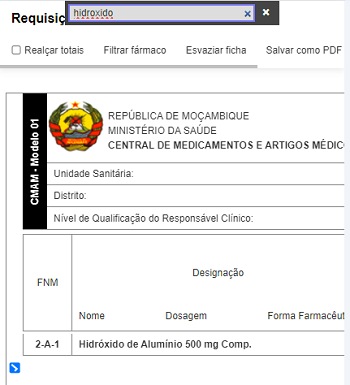
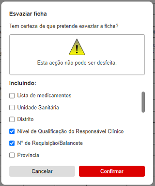
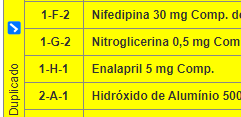
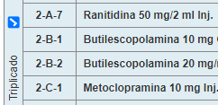

CliqueToque aqui para saber mais sobre as funcionalidades do totalizador.
CMAM - Modelo 01
República de MoçambiqueMinistério da SaúdeCentral de Medicamentos e Artigos Médicos
FNM
Designação
NomeDosagemForma Farmacêutica
Requisição do Nível Provincial ou Distrital
Controlo da Ficha de Stock
Controlo de Inventário
Stock no Início do Período
SI
Soma das Entradas
E
Soma das Saídas
S
Stock Teórico Fim do Período
SF=SI+E−S
Total dos Pedídos
P
Inventário do Stock
I
Diferença
I−SF
Quantidade a Requisitar
Quantidade Pedida
Qtd. Autorizada pelo Responsável Clínico
Linha:Coluna:
Totalizador de Requisição/Balancete
Este serviço é destinado às unidades sanitárias que precisam manter um stock de medicamentos para um intervalo mínimo de 2 meses, a fim de garantir a contínua execução normal das suas actividades mesmo se, porventura, não receberem medicamentos do seu depósito fornecedor durante esse intervalo de tempo. Razão pela qual, a fórmula utilizada pelo serviço para o cálculo da Quantidade a Requisitar é: Soma das saídas × 2 − Inventário do stock, em que 2, é referente aos 2 meses de manutenção de stock mínimo.
Totalizador de Requisição/Balancete
Esvaziar ficha
Tem certeza de que deseja esvaziar a ficha?
Esta acção não pode ser desfeita.
Inclusive os campos de:
CliqueToque para desmarcar os que não deseja esvaziar.
Visão geral sobre o requisição/balancete
O Totalizador de Requisição/Balancete é um serviço online gratuito que auxilia na elaboração, como o nome sugere, da requisição/balancete, por meio do cálculo automático do Stock Teórico Fim do Período, Diferença entre stock teórico e stock físico e Quantidade a Requisitar com base nos dados de controlo da ficha de stock e inventário preenchidos pelo usuário. Foi criado de acordo com o modelo da ficha de requisição/balancete actualmente vigente no Serviço Nacional de Saúde em Moçambique.
Objectivos
Auxiliar os profissionais de saúde no cálculo do Stock Teórico Fim do Período, Diferença entre stock teórico e stock físico e Quantidade a Requisitar com exatidão e prontidão;
Expandir o acesso à ficha de requsição/balancete.
O que eu preciso dispor para, e como utilizar o totalizador?
Um celular ou computador com acesso à internet;
Ficha(s) de Stock de cada fármaco/artigo médico com os movimentos do mês em alusão.
E por fim, preencher os movimentos de cada fármaco/artigo médico nas células correspondentes (Stock no Início do Período, Soma das Entradas, Soma das Saídas, Inventário do Stock) e consequentemente os totais (Stock Teórico Fim do Período, Diferença entre stock teórico e stock físico e Quantidade a Requisitar) são, em tempo real, correcta e automaticamente calculados.
Qual é o destino dos dados que eu insiro?
São guardados no seu celular ou computador, por meio de um recurso chamado Web Storage e você tem total controle sobre os dados, podendo mantê-los ou apagá-los por meio da opção "Esvaziar ficha" no menu do totalizador ou excluindo os dados de navegação do seu navegador.
Vantagens do totalizador
Calcula e preenche automaticamente o Stock Teórico Fim do Período, Diferença entre stock teórico e stock físico e Quantidade a Requisitar;
Fornece resultados exactos;
Apresenta essencialmente preenchida a coluna de Designação (Nome do medicamento, Dosagem e Forma farmacêutica) com uma lista dos medicamentos e artigos médicos mais consumíveis nas Unidades Sanitárias do país (Moçambique);
Flexibiliza a elaboração da requisição/balancete;
Pode ser impresso, inclusive como uma simples ficha de requisição/balancete;
Pode ser guardado como PDF.
Ajuda e Procedimentos
CliqueToque num título para ler o conteúdo relacionado.
Realçar totais
Adiciona cor de fundo amarela às células de Stock Teórico Fim do Período, Diferença e Quantidade a Requisitar. Essas têm o acesso interdito e a funcionalidade de realçá-las, permite distinguí-las facilmente das outras células. Muito útil em celulares.
A cor de realce de fundo das células não afecta a impressão.
Filtrar medicamento
Abre um campo no qual pode digitar o nome de um medicamento para destacá-lo e omitir os que não correspondem ao nome ou caracteres digitados. Esta funcionalidade facilita o preenchimento da requisição de acordo com a sequência da pilha das fichas de stock e não seguindo rigorosamente a sequência da lista dos medicamentos.

Imagem ilustrativa da funcionalidade Filtrar medicamentos com Hidróxido de Alumínio como exemplo.Esvaziar ficha
Comando para limpar parcial ou completamente a ficha após confirmação da acção na caixa de diálogo subsequente.

Legenda: Caixa de diálogo para esvaziamento da ficha. Neste caso, os campos de Lista de Medicamentos, Unidade Sanitária, Distrito e Província seriam preservados (por ter suas checkboxes desmarcadas). Todos os outros cujas "checkboxes" estão marcadas seriam esvaziados.Salvar ficha como PDF
No computador:
Clique na opção Imprimir no menu do totalizador.
Na janela que abrirá, no campo de Impressora ou Destino, selecione a opção Salvar como PDF.
Por fim, clique em Salvar e escolha um destino no seu computador.
No celular / tablet:
Toque na opção Salvar como PDF no cabeçalho do totalizador.
Na janela seguinte, logo abaixo do rótulo Tamanho do papel, toque na seta em forma de V para expandir as configurações.
No campo de Tamanho do papel, mantenha ISO A4 e no de Orientação, selecione Panorama ou Paisagem.
Por fim, toque no simbolo em forma de disquete e escolha um destino no seu celular para salvar o resumo.
Simular duplicado ou triplicado da ficha
Na margem esquerda da ficha, logo abaixo e à esquerda do 2o cabeçalho, encontram-se as opções Original, Duplicado e Triplicado.
Por padrão, está selecionada a opção Original. Mudando a seleção para Duplicado, a ficha muda de cor de fundo para amarelo (simulando um duplicado) e clicando sobre a opção Triplicado, o fundo muda para azul claro (simulando um triplicado), cores essas que em impressões coloridas, aproximam-se mais do aspecto de duplicado e triplicado.


Simulação de Duplicado (à esquerda) e de Triplicado (à direita).Algumas células ficaram vermelhas
Uma célula adopta um fundo vermelho como sinal de alerta para indicar que o valor contido nela, excedeu a largura fixa da célula e, por isso, os últimos algarismos estão omissos, ou seja, estão fora da área visível da célula.
Se os tópicos acima não cobrem as suas dúvidas, pode ainda solicitar suporte ao desenvolvedor através do endereço electrónico quinamine.aderitofelix@gmail.com ou através do WhatsApp.
Acesso Negado!
Você não está autorizado a usar o Totalizador de Requisição/Balancete, por desrespeito ao proprietário.
Para liberar o acesso, digite exactamente, 30 vezes, a seguinte mensagem: "Adérito, peço mil desculpas, não lhe vou mais faltar com o respeito."